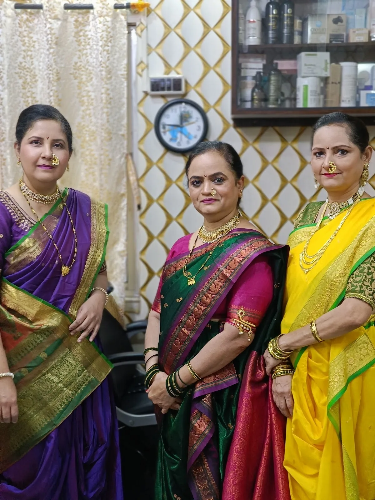
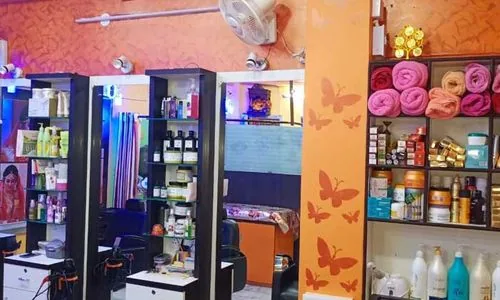

01
Describe the look
Mention the occasion, change, or care you have in mind so the salon can advise whether it is currently offered.
Home / About
Your neighbourhood beauty salon
Sakhi Ladies Beauty Parlour is a women-focused beauty salon in Rajdanga, Kasba, Kolkata.


Beauty, close to home
A neighbourhood destination for women’s beauty and wellness care, Sakhi is located at 92, Rajdanga Main Road. Discuss hair colour, a refreshed look or the care you have in mind with the salon.
Every visit starts with a conversation. Share your preferences, confirm the current menu and pricing, and find a time that works for you.
A simple approach
Share what you are considering, ask about the current options, and confirm the time and address before travelling.
01
Mention the occasion, change, or care you have in mind so the salon can advise whether it is currently offered.
02
Ask about preparation, service duration, and suitability for your needs directly with the salon.
03
Timings and slots can change. Confirm a suitable time by phone before your visit.
04
Use the verified Google Maps listing for directions to 92, Rajdanga Main Road.
Direct contact
Confirm the current service menu, availability, and timing with the salon.
Call +91 98040 68895WhatsApp enquiry